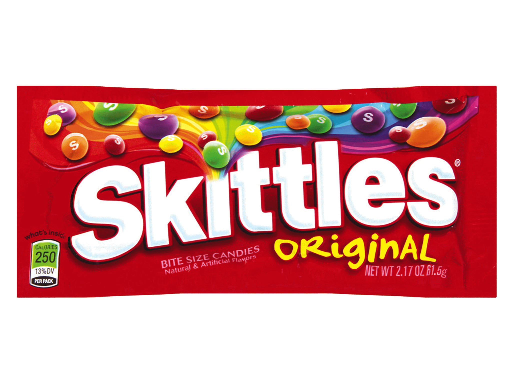

Skittles
- 1 cup granulated sugar
- 1/2 cup light corn syrup
- 1/4 cup water
- 1/2 teaspoon flavoring extract (lemon, orange, strawberry, etc.)
- Food coloring (according to the flavor)

Instructions
- Combine the sugar, corn syrup, and water in a medium saucepan over medium heat, stirring until the sugar has dissolved.
- Once the sugar has dissolved, stop stirring and let the mixture come to a boil. Use a candy thermometer to monitor the temperature and remove the saucepan from heat when it reaches 300°F (hard-crack stage).
- Let the mixture cool for a few minutes, then stir in your chosen flavor extract and a few drops of corresponding food coloring.
- Transfer the mixture into a candy mold, making sure to shape them similar to Skittles. If you don't have a mold, you can drop small amounts on a silicone mat or parchment paper to harden and form a round shape.
- Allow the candies to cool and harden completely, then remove them from the molds. You can coat them with a bit of powdered sugar for a finished look if you like.
- Use a slotted spoon to remove the fries from the oil. Place them on a paper towel-lined plate to drain excess oil. While they're still hot, sprinkle the fries with salt, pepper, and a bit of paprika if you'd like.